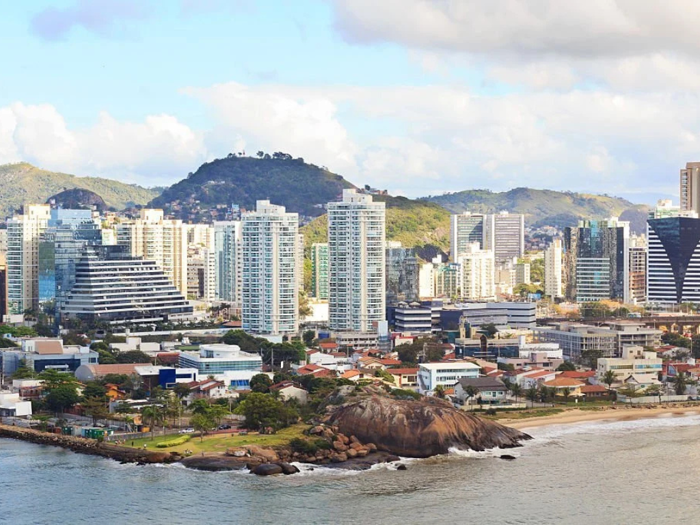

Localizado na região Sudeste do Brasil, o Espírito Santo é um estado que surpreende pela sua diversidade, unindo mais de 400 km de litoral com belas praias a regiões serranas deslumbrantes. Com uma população de mais de 4 milhões de habitantes, os capixabas — como são chamados os nascidos no estado — vivem em um território que mistura tradições de imigrantes italianos, alemães e pomeranos com uma forte cultura local. A capital, Vitória, é conhecida por sua alta qualidade de vida, enquanto cidades como Vila Velha e Serra impulsionam a economia baseada no turismo, portos, indústrias e a produção de café. Com o lema "Trabalha e Confia", o estado é reconhecido por seu crescimento econômico, segurança crescente e por ser um destino rico em história e belezas naturais.
